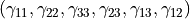
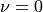
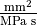
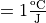
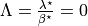
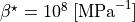
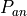
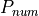
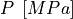
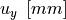

5.4. Cauchy THM couplings: Hydroelasticity application¶
In this tutorial we will validate the complex behavior of our model in elasticity in the presence of hydro-mechanical couplings. Our model is a rectangular block of unit base dimensions and of length 10 mm. Initially the bottom left and back faces of the block are constrained along their normal dimensions. In the free facets of the block (top, right, front) a common total compressive Normal stress is applied, together with a uniform pore fluid pressure.
The boundaries of the cantilever are considered to be insulated from its surroundings meaning that no fluid flow is allowed to take place. Under this configuration, the fluid flow inside the block is reminiscent of the 1D Darcy flow. We will be checking the diffusion time, the pore fluid pressure evolution at the free end of the cantilever and the developped displacements at the end of the analysis, when steady state has been achieved.
The file for this tutorial can be found in:
ngeoFE_unittests.Multiphysics.Cauchy_tests.ThreeD.BVP.Cauchy3D_DP_Hydroelasticity_tests_0
5.4.1. Begining of file¶
The file begins as follows:
from dolfin import *
from ngeoFE.feproblem import UserFEproblem, General_FEproblem_properties
from ngeoFE.fedefinitions import FEformulation
from ngeoFE.materials import UserMaterial
from ngeoFE_unittests import ngeo_parameters
from ngeoFE_unittests import plotting_params
import os # allows for easier handling of paths
from _operator import itemgetter # allows for transformation of lists to iterables, usefull for the definition of boundary conditions
5.4.2. Finite element formulation¶
For the implementation of the problem at hand the extra unknowns of the pressure and temperature fields need to be taken into account. We also need to include the values of pressure and temperature inside the material description so that the correct total and effective stresses are taken into account. Moreover, the existence of the coupled momentum, energy and mass balance partial differential equations (see previous tutorial), implies that the variational form of the problem needs to be modified in order to include the transient and coupling terms in the solution of the finite element problem. This procedure has been described in greater detail in the THM couplings implementation tutorial. The new Finite Element formulation is given as follows:
class THM3D_FEformulation(FEformulation):
'''
Defines a user FE formulation
'''
def __init__(self):
# Number of stress/deformation components
self.p_nstr=6+3+3
# Number of Gauss points
self.ns=1
# Number of auxiliary quantities at Gauss points
self.p_aux=2
def auxiliary_fields(self,v):
'''
Set user's generalized deformation vector
'''
auxgde=[
v[3],
v[4],
]
return as_vector(auxgde)
def generalized_epsilon(self,v):
'''
Set user's generalized deformation vector
'''
gde=[
Dx(v[0],0), #gamma_11
Dx(v[1],1), #gamma_22
Dx(v[2],2), #gamma_22
Dx(v[1],2)+Dx(v[2],1), #gamma_23
Dx(v[0],2)+Dx(v[2],0), #gamma_13
Dx(v[0],1)+Dx(v[1],0), #gamma_12
Dx(v[3],0), #q_1 - pf
Dx(v[3],1), #q_2 - pf
Dx(v[3],2), #q_3 - pf
Dx(v[4],0), #q_1 - temp
Dx(v[4],1), #q_2 - temp
Dx(v[4],2), #q_3 - temp
]
return as_vector(gde)
def create_element(self,cell):
"""
Set desired element
"""
self.degree=1
# Defines a Lagrangian FE of degree 1 for the displacements
element=VectorElement("Lagrange",cell,degree=self.degree,dim=3+1+1)
return element
def dotv_coeffs(self):
"""
Set left hand side derivative coefficients
"""
return as_vector([0.,0.,0.,1.,1.])
def setVarFormAdditionalTerms_Res(self,u,Du,v,svars,metadata,dt):
Res=0.
lstar=svars.sub(55-1)
bstar=svars.sub(56-1)
rhoC=svars.sub(57-1)
#HM terms
eps=self.generalized_epsilon(Du)
eps_v=eps[0]+eps[1]+eps[2]
virtual_pf=v[3]
Res+=-(1./bstar)*(1./dt)*dot(eps_v,virtual_pf)*dx(metadata=metadata)
#TM terms
virtual_Temp=v[4]
for i in range(1,6):
Res+= + (1./rhoC)*(1./dt)*svars.sub(1+i-1)*svars.sub(41+i-1)*virtual_Temp*dx(metadata=metadata)
#HT terms
DTemp=Du[4]
Res+= +(lstar/bstar)*(1./dt)*dot(DTemp,virtual_pf)*dx(metadata=metadata)
return Res
def setVarFormAdditionalTerms_Jac(self,u,Du,v,svars,metadata,dt,ddsdde):
lstar=svars.sub(55-1)
bstar=svars.sub(56-1)
rhoC=svars.sub(57-1)
alfa=svars.sub(58-1)
Jac=0.
#HM terms
eps=self.generalized_epsilon(u) #needs u (trial function, because it takes derivatives in terms of u and not Du for calculating the Jacobian.
eps_vol=eps[0]+eps[1]+eps[2]
virtual_pf=v[3]
Jac+=+(1./dt)*(1./bstar)*dot(eps_vol,virtual_pf)*dx(metadata=metadata)
#MH terms
pf=u[3] #same as before
virtual_eps=self.generalized_epsilon(v)
virtual_eps_vol=virtual_eps[0]+virtual_eps[1]+virtual_eps[2]
Jac+=-(1./dt)*dt*dot(pf,virtual_eps_vol)*dx(metadata=metadata)
#HT terms
temperature = u[4]
Jac+=-(1./dt)*(lstar/bstar)*dot(temperature,virtual_pf)*dx(metadata=metadata)
#MT terms due to thermal expansion
eps_temp=alfa*temperature*as_vector([1.,1.,1.,0.,0.,0.,0.,0.,0.,0.,0.,0.])
Jac+=-(1./dt)*dt*inner(dot(ddsdde,eps_temp),virtual_eps)*dx(metadata=metadata)
#TM terms due to thermal dissipation
virtual_temp=v[4]
eps_plastic=[]
for i in range(0,self.p_nstr):
eps_plastic.append(svars.sub(41-1+i))
eps_plastic=as_vector(eps_plastic)
Jac+=-(1./dt)*(1./rhoC)*inner(dot(ddsdde,eps),eps_plastic)*virtual_temp*dx(metadata=metadata)
#TM terms due to thermal expansion
Jac+=-(1./dt)*(1./rhoC)*inner(dot(ddsdde,eps_temp),eps_plastic)*virtual_temp*dx(metadata=metadata)
return Jac
5.4.3. Finite element problem description¶
We proceed now with building the main Finite element model, corresponding to a 3D Cauchy elastic block with a pore fluid pressure increase at its base. The finite element model is built inside a child class that inherits its methods from the parentclass UserFEproblem(). We will provide here commentary for each method used inside the childclass THM3D_FEproblem(UserFEproblem).
class THM3D_FEproblem(UserFEproblem):
def __init__(self,FEformulation):
self.description="Example of 3D rectangular cantilever, Cauchy continuum"
self.problem_step=0
self.h = 1.
self.Normal_loading_total=-200.
self.Pressure_loading=66.66
self.Normal_loading_eff=self.Normal_loading_total+self.Pressure_loading
super().__init__(FEformulation)
In the class __init__() method, the finite element formulation defined above is provided as argument.The geometric dimensions of the problem are also specified
Its height self.h=1.0, its length self.l=1.0 and its width self.w=1.0 . The initialization then proceeds to set up all the methods of the parentclass UserFEproblem().
The methods inside the class are defined by overriding the methods inside the parent class.
def set_general_properties(self):
"""
Set here all the parameters of the problem, except material properties
"""
self.genprops=General_FEproblem_properties()
# Number of state variables
self.genprops.p_nsvars=62
This method is used to provide the number of state variables of the material. In this tutorial only the mechanical behavior is important and therefore, the state of material is described by the increment of stress, total strain, elastic strain, plastic strain, plastic strain multiplier and plastic strain rate. Notice that even though the problem is in 3D and three strain components (and consequently three stress components) are needed for the description of equilibrium the state of the material contains the information also for the rest components of the general 3D problem. For each material used by the Numerical Geolab, the number of state variable components is given in the corresponding material table.
Next we continue by generating the mesh for the problem at hand. Here, we model a 3D Cauchy rectangular cantilever.
For this simple geometry the capabilities of the dolfin.cpp.mesh module can be used to define
a paralepiped consisting of 400 tetrahedral elements by specifying the bottom left and upper right corners of the paralepiped domain.
def create_mesh(self):
"""
Set mesh and subdomains
"""
self.nx=1
self.ny=1
self.nz=100
mesh=BoxMesh(Point(-0.5*self.l,-0.5*self.w,-0.5*self.h),Point(0.5*self.l,0.5*self.w,0.5*self.h),self.nx,self.ny,self.nz)
cd = MeshFunction("size_t", mesh, mesh.topology().dim())
fd = MeshFunction("size_t", mesh, mesh.topology().dim()-1)
return mesh, cd, fd
For the domain at hand we specify a discretization with nx=1 element along the x[0] component, ny=1 element along the x[1]
component and nz=1 element along the x[2] component. The dolfin.cpp.mesh.MeshFunction method of dolfin is used to
provide the mesh object, the interior domain and the boundary domains. The following model is the produced:
{kind=link}
Fig. 5.4.1 Image of the unit cube. The domain was exported with the help of the third party software Paravew.¶
We next assign values to the regions of the mesh defined by different material properties.
def create_subdomains(self,mesh):
"""
Create subdomains by marking regions
"""
subdomains = MeshFunction("size_t", mesh, mesh.topology().dim())
subdomains.set_all(0) #assigns material/props number 0 everywhere
return subdomains
In this tutorial all the domain is defined by the same material properties and therfore the value 0 will be assigned everywhere inside the mesh.
This value is a number indicating which material parameters need to be taken into account in each mesh region (see the corresponding method
set_material_1_properties()).
5.4.3.1. Boundary identification¶
We proceed now by identifying the boundaries needed for the application of the boundary conditions at a later stage of the modeling procedure.
We make use of the dolfin.cpp.mesh.SubDomain parent class inside dolfin:
- class dolfin.cpp.mesh.SuDomain¶
We create a child class that will handle the assignment of different labels at the different faces of the unit cube. We implement this by
modifying the dolfin.cpp.mesh.SubDomain.inside() method of the parent class.
- dolfin.cpp.mesh.SuDomain.inside()¶
class Boundary(SubDomain):
def __init__(self,xyz,param):
self.xyz=xyz
self.param=param
super().__init__()
def inside(self, x, on_boundary):
tol = DOLFIN_EPS
return on_boundary and near(x[self.xyz],self.param)
Inside the Boundary subclass we define the logical test for assigning the specific boundary node in one of the boundary regions, where the boundary conditions will be applied.
The value x[i] indicates the spatial coordinate  of the problem at hand.
of the problem at hand.
We continue by marking the boundaries of the model based on the classes defined during the boundary identification phase (see section Boundary identification above).
We do so by assigning the numbers 1 to 6 to the different boundary facets of the model. To do this we use the method mark() from the SubDomain class of
dolfin.
def mark_boundaries(self, boundaries):
"""
Mark left and right boundary points
"""
top0 = self.Boundary(2,self.h3/2.)
top0.mark(boundaries, 1)
bottom0 = self.Boundary(2,-self.h3/2.)
bottom0.mark(boundaries, 2)
#
left0 = self.Boundary(0,-self.h1/2.)
left0.mark(boundaries, 3)
right0 = self.Boundary(0,self.h1/2.)
right0.mark(boundaries, 4)
#
back0 = self.Boundary(1,-self.h2/2.)
back0.mark(boundaries, 5)
front0 = self.Boundary(1,self.h2/2.)
front0.mark(boundaries, 6)
Thus, we marked the facets constituting the boundary of the cantilever, for applying the desired boundary conditions.
5.4.3.1.1. Initial conditions¶
Our test takes place in a fluid saturated geomaterial, which lies under total compression Normal_loading total =-200 MPa.
The pore fluid pressure is set to be self.Pressure_loading =66 MPa, thus initially the material lies under uniform effective
copressive stress self.Normal_loading_eff =-133.33 MPa according to the Terzaghi principle. We need to specify the initial state at the start of the analysis,
by making use of the function set_initial_conditions() :
def set_initial_conditions(self):
"""
Initialize state variables vector
"""
#Modify the state variables (corresponding to the stresses)
print(self.genprops.p_nsvars)
tmp=np.zeros(self.genprops.p_nsvars)
tmp[1-1]=self.Normal_loading_eff
tmp[2-1]=self.Normal_loading_eff
tmp[3-1]=self.Normal_loading_eff
tmp[53-1]= self.Pressure_loading
self.feobj.svars2.interpolate(Constant(tmp))
#Modify the stresses (for Paraview)
tmp=np.zeros(12)
# tmp=np.zeros(6)
tmp[1-1]=self.Normal_loading_total # if specimen is in dry conditions total pressure equals effective pressure
tmp[2-1]=self.Normal_loading_total
tmp[3-1]=self.Normal_loading_total
self.feobj.sigma2.interpolate(Constant(tmp))
# tmp=np.zeros(2)
# tmp=np.zeros(3)
tmp=np.zeros(5)
tmp[4-1]= self.Pressure_loading
self.feobj.usol.interpolate(Constant(tmp))
return
5.4.3.1.2. Assigning boundary conditions¶
We are now able to identify the boundaries of the mesh and assign different boundary condition to each side of the boundary.
The way we apply the boundary conditions can be seen in the method set_bcs() :
def set_bcs(self):
"""
Set boundary conditions for the user problem / could be replaced by external mesher, e.g. Abaqus, Gmsh...
"""
self.DP=10.
self.DT=0.
if self.problem_step == 0:
bcs=[
[1,[3,[2],self.Normal_loading_total]],
[4,[3,[0],self.Normal_loading_total]],
[6,[3,[1],self.Normal_loading_total]],
[2,[0,[2],0.]],
[3,[0,[0],0.]],
[5,[0,[1],0.]],
]
elif self.problem_step != 0:
bcs=[
[1,[3,[2],self.Normal_loading_total]],
[2,[0,[2],0.]],
[3,[0,[0],0.]],
[4,[3,[0],self.Normal_loading_total]],
[5,[0,[1],0.]],
[6,[3,[1],self.Normal_loading_total]],
[1,[3,[3],0.]],
[2,[2,[3],self.DP]],
[1,[3,[4],0.]],
[2,[2,[4],self.DT]],
]
return bcs
Inside this method the boundaries are assigned with the use of a nested list. Dirichlet, Neuman and Robin boundary conditions can be applied both incrementaly and instantaneously. The boundary conditions can be assigned to a boundary region or pointwise.
In this example, the boundary conditions change at different steps of the analysis. At the begining o the analysis the initial conditions of the problem are assigned to the block. The region id ranges from 1 to 6. In order to apply the correct value of the effective stress we apply the normal displacement constraint in the (bottom, left and back) surface of the block, and the common total normal loading stress at the free facets. After successful application of the initial conditions, wev proceed at the main part of the analysis, which is the application of the pore fluid pressure increase at the bottom facet of the block. We specify also that the temperature increase is zero. For the displacement components of the vectorspace ([0],[1],[2]), the type of bc is set to 0, specifying incremental Dirichlet boundary conditions. For the pore fluid pressure component of the vectorspace ([3]) we specify the value 2 for the type of the boundary condition indicating an instantaneous Dirichlet boundary condition (pore fluid pressure increase) of value 10 MPa. For the temperature component of the vectorspace ([4]) the type of boundary condition is set to 0 indicating an incremental Dirichlet boundary condition of zero temperature.
5.4.3.2. History output specification¶
Numerical Geolab offers the user the capability of extracting the output at the converged increments of the numerical analysis at specific Gauss points and nodes of the numerical model. This capability is given to the user in order to obtain the exact nodal output of the solution (forces, displacements) and the corresponding state variables output at the Gauss points, instead of using the interpolated results provided in a separate .vtk file for postprocessing with a third party software (e.g. Paraview).
5.4.3.2.1. Assigning the nodal history output¶
The history output at the nodes can be given by:
def history_output(self):
"""
Used to get output of residual at selected node
"""
hist=[[1,[1,[0]]],
[1,[0,[0]]],
[1,[1,[1]]],
[1,[0,[1]]],
[1,[1,[2]]],
[1,[0,[2]]],
[1,[1,[3]]],
[1,[0,[3]]],
[1,[1,[4]]],
[1,[0,[4]]]
]
return hist
The node specification works the same way as in set_bcs(). In this example we choose the top facet of the boundary (1) in order to monitor the all the vector components ([0],[1],[2],[3],[4]) of the force (1) and displacements (0) fields.
5.4.3.3. Material specification¶
Next, we define the analysis material that we have already assigned in the create_subdomains() method.
def set_materials(self):
"""
Create material objects and set material parameters
"""
mats=[]
# load material #1
env_lib=ngeo_parameters.env_lib
umat_lib_path= ngeo_parameters.umat_lib_path
umat_lib = umat_lib_path+'/CAUCHY3D-DP/libplast_Cauchy3D-DP-PR-TEMP.so'
umat_id=3 # if many materials exist in the same library
mat=UserMaterial(env_lib,umat_lib,umat_id)
mat.props=self.set_material_1_properties(2000.,0.,100.,0.,1.)
#
mats.append(mat)
return mats
The ngeo_parameters.py module contains the relative path to the materials libraries, which specify the different materials available to the user. The variable umat_id=3 needs to be set for the 3D analyses performed here. It specifies the mapping of the updated vector components of the strain increment  and the corresponding tensor components of the constitutive matrix, with their position in the 3D strain vector and 3D constitutive matrix provided at the material subroutine (material algorithm). This mapping returns back the correct components of the stress vector and constitutive matrix to pass into the residual calculation of the weak form in dolfin (equilibrium iterations). The material properties passed into the material algorithm, are set with the helper method:
def set_material_1_properties(self):
"""
Sets material parameters
"""
EE=2000.;nu=0. ;cc=10000000. ;tanfi=0.;tanpsi=0.;Hsfi=0.;Hscc=0. #elastic behavior is ensured
GG=EE/(2.*(1.+nu))
KK=EE*GG/(3.*(3.*GG-EE))
chi=1.0 #permeability;
eta_f=1.0 #fluid_viscosity
lstar=0. #thermal expansivity of mixture
bstar=10.**8 #hydraulic expansivity of mixture
alpha=0. #thermal expansion coefficient
kT=1./1. #conductivity
rhoC=1. #density * specific heat capacity
props=np.array([KK,GG,chi,eta_f,bstar,kT,rhoC,alpha,lstar,0.,tanfi,cc,tanpsi,Hsfi,Hscc,0.,0.,0.,0.,0.])
props=props.astype("double")
return props
The material used in this application is elastic cc`=10000000 MPa.
We specify the material's elastic parameters using the material young modulus :math:`EE=2000;text{MPa} and
Poisson ratio . The parameters passed into the material subroutine are the 3D isotropic compression modulus KK and the shear modulus
GG. Therefore, a transformation of the elastic constants is needed. The material constants ( GG, KK, chi, eta_f, lstar, bstar, alpha,
kT, rhoC ), and their position in the material properties (numpy array props), can be found in the
Material description and the material library files that accompany Numerical Geolab.
We intent to verify that our analysis indeed predicts the correct pore fluid pressure evolution and the correct displacement at the
end of the cantilever when steady state is achieved. To do so we will set the hydraulic permeability of the material at chi =1 
and specific heat , so that the thermal diffusion coefficient is equat to one. We also set the
thermal pressurization constant . Moreover, in order to avoid pore fluid pressure pressure reduction due to the expansion of the material volume
due to swelling we will set the hydraulic expansivity of the medium . Thus, the only active coupling is that of
pore fluid pressure and the machanical behavior (Terzaghi’s principle).
| Once the analysis material(s) have been set we are able to exit the class definition for THM3D_FEproblem.
5.4.4. Analysis excecution and postprocessing¶
Our model is now set and ready to run. In this application we will test the temperature evolution and the expansion of the cantilever after steady state is achieved.
We will create a model derived by the class THM3D_FEproblem. We will study the problem in an 3D isostatic cantilever compised of 400 tetrahedral elements.
The full problem description script can be found here.
The reults are presented in Figure 1, Figure 2
5.4.4.1. Controling the analysis time¶
The following code block provides the solver parameters inclusing the step total analysis time, the maximum time increment, the tolerance of the converged increment and the maximum number of increments.
def give_me_solver_params(self,scale_t=1.):
self.scale_t = scale_t
self.slv.incmodulo = 1
self.slv.dtmax=5#5
self.slv.tmax=500
ninc=int(self.slv.tmax/self.slv.dtmax)
self.slv.nincmax=1000000
self.slv.convergence_tol=10**-8
self.slv.removezerolines=False
The parameter scale_t controls the overall time increment and total time of the analysis. We specify it as an attribute of the
class so that it can be called by the other analysis procedure method. To avoid confusion with the problem description we choose not to incorporate it as an
argument to be passed at the level of the problem definition. Next, the main part of the analysis follows.
This method specifies the boundary conditions to be applied at each step of the analysis and the total time of each analysis step.
def run_analysis_procedure(self,reference_data_path):
saveto=reference_data_path+"THM-RESULTS/HYDRO_ELASTIC/Hydroelasticity_test3D_THM3D_step_0.xdmf"
self.problem_step = 0
self.bcs=self.set_bcs()
self.feobj.symbolic_bcs = sorted(self.bcs, key=itemgetter(1))
print("initial")
converged=self.solve(saveto,summary=True)
scale_t_program = [self.scale_t,self.scale_t,self.scale_t,self.scale_t,self.scale_t]
ninc=[5010,100,100,100]
print("shearing1")
nsteps=1
for i in range(nsteps):
self.problem_step = i+1
scale_t = scale_t_program[i]
self.slv.nincmax=ninc[i]#1000000
self.slv.dtmax=5.*scale_t
self.slv.dt=self.slv.dtmax
self.slv.tmax=self.slv.tmax+500.*scale_t#500.*scale_t
self.feobj.symbolic_bcs = sorted(self.set_bcs(), key = itemgetter(1))
self.feobj.initBCs()
filename = 'THM-RESULTS/HYDRO_ELASTIC/Hydroelasticity_test3D_THM3D_step_'+str(i+1)
saveto= reference_data_path+filename+".xdmf"
converged=self.solve(saveto,summary=True)
return converged
In this application two analysis steps are run. The maximum number of increments for each step is set to ninc=100000.
5.4.4.2. Postprocessing the results¶
The following functions will help with unpacking the nodal solution.
def history_unpack(self,list1):
for i,elem in enumerate(list1):
if i==0:
self.array_time=np.array([[elem[0]]])
self.array_gen_force=elem[1].reshape((1,len(elem[1])))
self.array_gen_disp=elem[2].reshape((1,len(elem[2])))
continue
self.array_time=np.concatenate((self.array_time.copy(),np.array([[elem[0]]])))
self.array_gen_force=np.concatenate((self.array_gen_force.copy(),elem[1].reshape((1,len(elem[1])))))
self.array_gen_disp=np.concatenate((self.array_gen_disp.copy(),elem[2].reshape((1,len(elem[2])))))
return
The following functions allow us to extract the generalized force displacement vectors and the state variables at the Gauss points into postprocessing atributes to be used by the user’s postprocessing algorithms.
def extract_generalized_force_disp(self):
analysis_history=self.feobj.problem_history
self.history_unpack(analysis_history)
self.array_time=self.array_time[:].copy()
self.array_gen_force=self.array_gen_force[:,:]#.reshape((-1,20))
self.array_gen_disp=self.array_gen_disp[:,:]#.reshape((-1,20)).copy()
return
5.4.4.3. Excecuting the analysis¶
The following set of commands initializes the finite element formulation, the finite element problem and runs the analysis.
my_FEformulation=THM3D_FEformulation()
my_FEproblem1=THM3D_FEproblem(cls.my_FEformulation)
my_FEproblem1.give_me_solver_params(scale_t=1.)
converged1=my_FEproblem1.run_analysis_procedure(reference_data_path
5.4.4.4. Plotting the analysis values¶
We will take advantage of the plotting capabilities of Numerical Geolab available in ngeoFE_unittests.plotting_params.
We will plot the values of temperature by an analytical calculation  and the corresponding umerical values of temperature
 at the free end of the cantilever w.r.t. time in the left part of
in Figure in Figure 1:
x1=list(values_time1[:].copy())
y1=list(values_gen_disp1[:,-5].copy())
x1.insert(0,0)
y1.insert(0,0)
filepath=reference_data_path+'diffusion_analytical_results.txt'
analytical_pressure_values=np.loadtxt(filepath)
x2=analytical_pressure_values[:,0]
y2=analytical_pressure_values[:,1]+self.Pressure_loading
fig, ax1, ax2, color1, color2 = plotting_params.object_plot_axes('$t$ [s]', y1_txt='$P{an}\; $[MPa]',color1='',y2_txt='$P_{num}\; $[MPa]',color2='', title='',mode='2')
plotting_params.object_plot(x2, y2, y1, ax1, ax2, mode='2',color1=color1,color2=color2,label_string='')
plotting_params.show_plot()
plotting_params.plot_legends(ngeo_parameters.reference_data_path, fig, filename='Cauchy_3D_Hydroelasticity_Pcalc_Panal',mode='1')
We will also plot the vertical displacement w.r.t. time in Figure in Figure 1, in order to check the swelling of the cantilever due to pore fluid pressure increase:
x1=list(values_time1[:].copy())
y1=list(values_gen_disp1[:,1].copy())
x1.insert(0,0)
y1.insert(0,0)
fig, ax1, color1 = plotting_params.object_plot_axes('$t$ [s]', y1_txt='$u_z$ [mm]',color1='',y2_txt='',color2='', title='',mode='1')
plotting_params.object_plot(x1, y1, 'y2', ax1, 'ax2', mode='1',color1=color1,color2='',label_string='')
plotting_params.show_plot()
plotting_params.plot_legends(ngeo_parameters.reference_data_path, fig, filename='Cauchy_3D_Hydroelasticity_u_anal',mode='1')
Fig. 5.4.2 Evolution of pore fluid pressure ( at the top free surface of the block w.r.t. time.¶ |
Fig. 5.4.3 Evolution of the normal displacement () at the top of the block with respect to time.¶ |
{kind=link}
{kind=link}